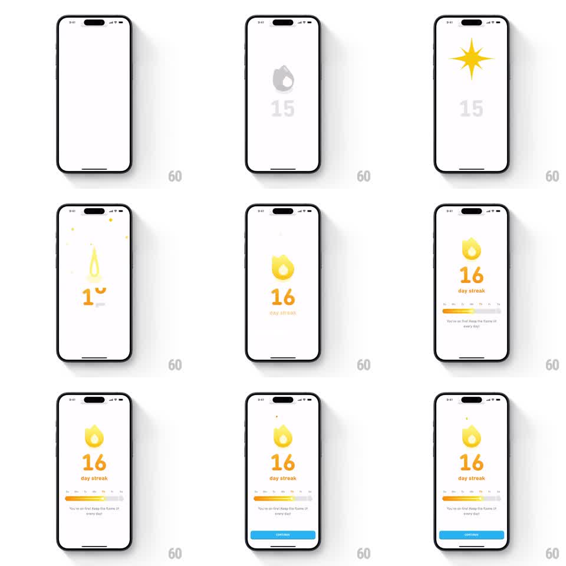

Media
Frame-by-frame

Rebuild this animation 1:1: Duolingo's 16-day streak celebration - a gray flame and dim 15 get hit by a radial star shockwave, the flame ignites tall and bright, the counter bounces to 16, the weekday bar fills, and the "You're on fire!" caption and CONTINUE button stagger in.

Rebuild this animation 1:1: Duolingo's 16-day streak celebration - a gray flame and dim 15 get hit by a radial star shockwave, the flame ignites tall and bright, the counter bounces to 16, the weekday bar fills, and the "You're on fire!" caption and CONTINUE button stagger in. ## Integration Integration: stack-agnostic spec - springs given as stiffness/damping, timed motions as duration + curve; map every value to your framework and animation library of choice. ## Scene White screen. Center: streak flame over a large counter and "day streak" label. Below: weekday progress bar (Su-Sa), caption "You're on fire! Keep the flame lit every day!", blue CONTINUE button. ## Motion spec Pattern: shockwave ignition with bouncy counter. - A yellow 8-point star shockwave flashes over the dim flame (scale 0.3 -> 1.4, 250ms, fading out), accompanied by a radial ring and 5 spark dots flying outward. - The flame ignites (gray to yellow, 200ms) and stretches tall (scaleY 1.0 -> 1.3 -> 1.0, spring ~320/16). - Counter bounces 15 -> 16: digit slide up with overshoot (spring ~300/14, visible wobble ~350ms). - Weekday bar: track fades in, fill sweeps to the current day (600ms ease-out). - Caption fades up (200ms); CONTINUE slides up (280ms ease-out). ## Calibration - The shockwave hits before the ignition - impact first, fire second. - The counter's spring wobble is looser here than standard digit rolls; let it visibly bounce. ## Reduced motion Flame and counter crossfade to final state; bar fills over 300ms; caption and button fade in. ## Don't miss - The star shockwave is yellow and hard-edged, not a soft glow. - The flame's tall stretch settles back to normal proportions; it does not stay stretched.